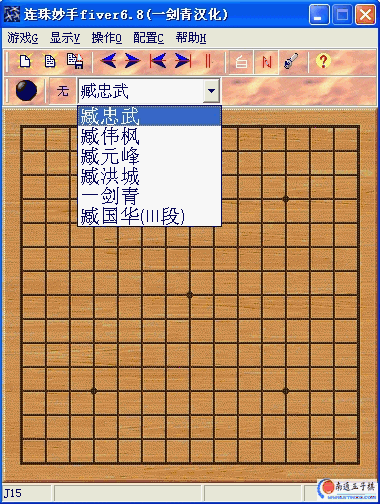

连珠妙手fiver6.8(汉化版)
#1 连珠妙手fiver6.8(汉化版)作者：有志青年 发表时间：2007-1-12 19:35:25
汉化作者说明：
国内最好的五子棋软件，修改了软件里的级别名字（只是搞笑）改为了我好友姓名，
往下拉最下面的水平最好。软件归原作者所有，只是为了大家方便汉化而已。
本人不承担任何责任。下载后请自行删除！
QQ:1939063

#2 Re:连珠妙手fiver6.8(汉化版)作者：酒鬼 发表时间：2007-1-14 19:26:07
好多天没上了电脑被黑刚好要找呢，谢谢了
#3 Re:连珠妙手fiver6.8(汉化版)作者：xuemoh 发表时间：2007-1-15 3:34:46
找了好久啊！呵呵
#4 Re:连珠妙手fiver6.8(汉化版)作者：kaster 发表时间：2007-1-19 23:28:10
不知道6.8和6有什么区别 下来试试看...#5 Re:连珠妙手fiver6.8(汉化版)作者：柳生一剑 发表时间：2007-1-29 14:36:29
强大的软件#6 Re:连珠妙手fiver6.8(汉化版)作者：友善 发表时间：2007-1-30 0:00:12
软件有什么用呢?#7 Re:连珠妙手fiver6.8(汉化版)作者：xy6942 发表时间：2007-2-22 9:10:55
没试过，下来看看#8 Re:连珠妙手fiver6.8(汉化版)作者：不超过 发表时间：2007-3-14 5:32:03
好的，多谢了！
#9 Re:连珠妙手fiver6.8(汉化版)作者：小不 发表时间：2007-4-8 15:31:51
以前用过，感觉还不错。#10 Re:连珠妙手fiver6.8(汉化版)作者：qdwjl 发表时间：2007-4-18 16:03:20
哈哈，有趣啊
#11 Re:连珠妙手fiver6.8(汉化版)作者：青发伊凌寺 发表时间：2007-5-8 23:07:48
来本站有四个月了,最近有时间常上,找到了不少好东东,谢谢南通五子棋网站!我想再过几个月,我的棋力在单位上应是最好的了.
再次感谢!
#12 Re:连珠妙手fiver6.8(汉化版)作者：无为 发表时间：2007-5-9 22:25:14
汉化版，这个难道不是国人写的软件？
#13 Re:连珠妙手fiver6.8(汉化版)作者：hotoo 发表时间：2007-5-21 23:44:35
好东西 经过修改了 我记得原来是西游的
#14 Re:连珠妙手fiver6.8(汉化版)作者：cycxyz 发表时间：2007-6-10 19:26:31
走过路过#15 Re:连珠妙手fiver6.8(汉化版)作者：陶然醉醉 发表时间：2007-6-21 16:18:50
谢谢，看着好亲切，好久没去下棋了，都忘了，操练一下#16 Re:连珠妙手fiver6.8(汉化版)作者：如高人 发表时间：2007-6-30 22:03:48
怎么下载，我要砍人#17 Re:连珠妙手fiver6.8(汉化版)作者：云开 发表时间：2007-7-2 14:10:49
谢谢#18 Re:连珠妙手fiver6.8(汉化版)作者：sayan 发表时间：2007-7-12 20:47:54
呵呵,很厉害的一个软件!~#19 Re:连珠妙手fiver6.8(汉化版)作者：冰姿 发表时间：2007-7-20 19:15:20
大家好！第一次来这里，很想找这个软件下出来有时间学学，可怎么也不知道从哪里下？指点下？谢谢！#20 Re:连珠妙手fiver6.8(汉化版)作者：看蚂蚁打架 发表时间：2007-7-21 10:59:01
很不错的软件啊。很高兴到这里见到很多高手，#21 Re:连珠妙手fiver6.8(汉化版)作者：吾本沉默 发表时间：2007-8-11 9:43:05
辛苦了。#22 Re:连珠妙手fiver6.8(汉化版)作者：残月晓风 发表时间：2007-8-15 10:26:25
看看~~~~~~~~~~~~~~~~~~~~~~#23 Re:连珠妙手fiver6.8(汉化版)作者：mqppbb 发表时间：2007-8-15 14:05:55
顶vb#24 Re:连珠妙手fiver6.8(汉化版)作者：mqppbb 发表时间：2007-8-15 14:48:22
非常好的软件,多谢
#25 Re:连珠妙手fiver6.8(汉化版)作者：醉轩听雨 发表时间：2007-9-5 8:13:15
棋力挺强的。#26 Re:连珠妙手fiver6.8(汉化版)作者：吴广德 发表时间：2007-9-6 12:15:58
与之前的6版有何差别呢?#27 Re:连珠妙手fiver6.8(汉化版)作者：窝一啊 发表时间：2007-9-23 15:58:06
黑石4.0与FIVER6.8有什么区别#28 Re:连珠妙手fiver6.8(汉化版)作者：hack88 发表时间：2007-9-29 17:48:15
和 执黑必胜比呢 ？
谁能给我说说两着的区别和用处？？
#29 Re:连珠妙手fiver6.8(汉化版)作者：637961 发表时间：2007-10-22 8:42:59
好,好东东啊
#30 Re:连珠妙手fiver6.8(汉化版)作者：windin 发表时间：2007-10-22 16:41:26
下载一个，好。#31 Re:连珠妙手fiver6.8(汉化版)作者：cly02e 发表时间：2007-10-30 0:48:03
为了五子发展，楼主辛苦了#32 Re:Re:连珠妙手fiver6.8(汉化版)作者：guoyon 发表时间：2007-11-17 14:03:13
我试过，这软件好象下黑的时候有事怒太好用。总的来说还是可以的。
#33 Re:连珠妙手fiver6.8(汉化版)作者：川东响马 发表时间：2007-11-17 17:51:22
谢谢,下来研究看看#34 Re:连珠妙手fiver6.8(汉化版)作者：欧乙平 发表时间：2008-3-16 8:44:13
有点意思啊！！！
#35 Re:连珠妙手fiver6.8(汉化版)作者：糖醋小排 发表时间：2008-4-17 20:56:14
太好了,谢谢
#36 Re:连珠妙手fiver6.8(汉化版)作者：汪洋孤舟 发表时间：2008-4-23 0:41:30
有没有棋力强的，这个虽然还行但是有时候还是要输的，每天至少输一次！#37 Re:连珠妙手fiver6.8(汉化版)作者：山外青山 发表时间：2008-10-22 21:27:06
下了一个,谢谢#38 Re:连珠妙手fiver6.8(汉化版)作者：找不着北 发表时间：2008-11-8 14:42:21
真的很好 啊#39 Re:连珠妙手fiver6.8(汉化版)作者：大屋 发表时间：2009-1-5 14:21:12
佩服之心如滔滔江水永无绝期#40 Re:连珠妙手fiver6.8(汉化版)作者：自来水 发表时间：2009-2-20 17:54:44
这个软件显然还是比较弱 帮黑石差远了，话又说回来，黑石对于开局不下天元的局也彻底弱了
帮黑石差远了，话又说回来，黑石对于开局不下天元的局也彻底弱了
总的来说这种东西也仅供娱乐，呵呵~~
#41 Re:连珠妙手fiver6.8(汉化版)作者：魔坠人间 发表时间：2009-2-27 16:28:37
这些版本之间有什么差别呢？#42 Re:连珠妙手fiver6.8(汉化版)作者：解放者 发表时间：2010-2-11 15:41:40
不强啊.棋力比五子棋大师2差多了.
那个号称3段的藏国华被我执白砍多少回了.